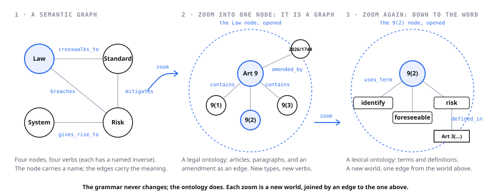
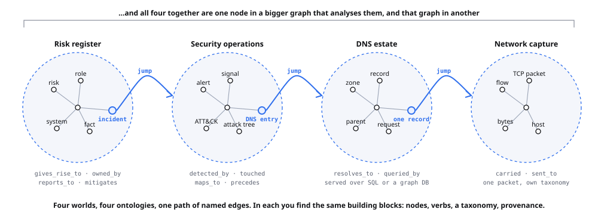

Four more graph vaults
The first edition analysed five published graph vaults and froze with them, so /v1/vaults/ is evidence and cannot take a new one. These four arrived with brief 47: they are rungs of a ladder a sibling project walks from the text of a law to a threat on a compute instance, and this site had never looked at them.
| Vault | Its rung | Id |
|---|---|---|
| Standards Atlas: GDPR A regulation whose operative meaning is not in its text, modelled so that the rulings and the guidance are nodes rather than footnotes. | the law, and its interpretation | 4zv4bvmu |
| Provenance is not conformance A conformance layer over a published standard, whose whole design is that an absent answer is a finding rather than a silence. | the standard, the evidence and the policy | 2wzct4k7 |
| Licence to Operate An agent's authority modelled as an insurance policy, and then spent, so that the gap between what it can do and what it may do has a price. | the policy, spent turn by turn | posrhzp3 |
| Scaling Threat Modeling with Semantic Knowledge Graphs Eleven linked threat models stacked from the customer to the compute instance, so a flaw in one method can be traced to the revenue it threatens. | the system, all the way down to the compute instance | 0ict6flm |
The second cross-vault finding
The first edition produced one finding that no single vault contained: the capability scale, which only the comparison of five vaults made visible. This is a second, and it is of a different kind. The capability scale came out of comparing; this one comes out of a join, and the fact it returns is in neither of the two vaults it joins.
AIUC-1 publishes 1,126 crosswalks to external frameworks as text. The conformance layer resolves the EU AI Act ones into node ids in a second published vault, so a crosswalk stops being a string and becomes a traversal.
so a crosswalk stops being a string and becomes a traversal between two vaults
Sixty-two of them resolve, onto twenty-seven articles, and the rest are reported unresolved rather than forced into a shape they do not fit.
62 of the 1,126 resolve, at article level, onto 27 articles.
Then the join returns something neither vault knew alone: eight of those twenty-seven articles have since been amended, so the crosswalk was written against the text before the amendment.
8 of those 27 articles are amended by Regulation (EU) 2026/1744, so the crosswalk was published against the text before amendment.
Which is the point, stated by the vault in one sentence.
That is a finding you cannot reach with a document.
The ladder these four are rungs of
Eleven altitudes, eleven ontologies, one grammar. Each rung names the published vault in which that level is a live graph, and every one is openable with the read key printed on its page. The diagram below is lifted from sgit.ai rather than redrawn, because redrawing a picture that is already correct produces two things to keep in step; the extraction is recorded in figures/CREDITS.md. Its links are live, which is why it is inlined here rather than embedded as an image.
The same grammar, a different ontology at each altitude
The correction this site took at v0.6.21, drawn. A four-node semantic graph; the Law node opened into a legal ontology of articles and paragraphs; one paragraph opened into a lexical ontology that has nothing in common with it two levels up. The footer is the whole claim: the grammar never changes; the ontology does.

And the link on which you leave one world for another
Inside one vocabulary, knowledge accrues one well-named edge at a time, and a register with ten thousand of them is a great deal of knowledge and not yet fractal. The fractal property is the link you jump on: out of the register into security operations, out of a suspicious DNS entry into the DNS estate, out of one record into a packet capture. Four worlds, four ontologies, one continuous path of named edges.

For an agent
The machine surface is data/vaults.json, schema evidence-estate-v1: four vaults, every fact carrying the quotation it rests on and the carried file that quotation was checked against. The carried sources are sources/MANIFEST.json, each with its origin URL, SHA-256 and fetch timestamp. Nothing here was read out of a vault; it was read out of the pages listed in that manifest, on the date they record. The five first-edition vault analyses at /v1/vaults/ were written differently, by opening the vaults, and are frozen.